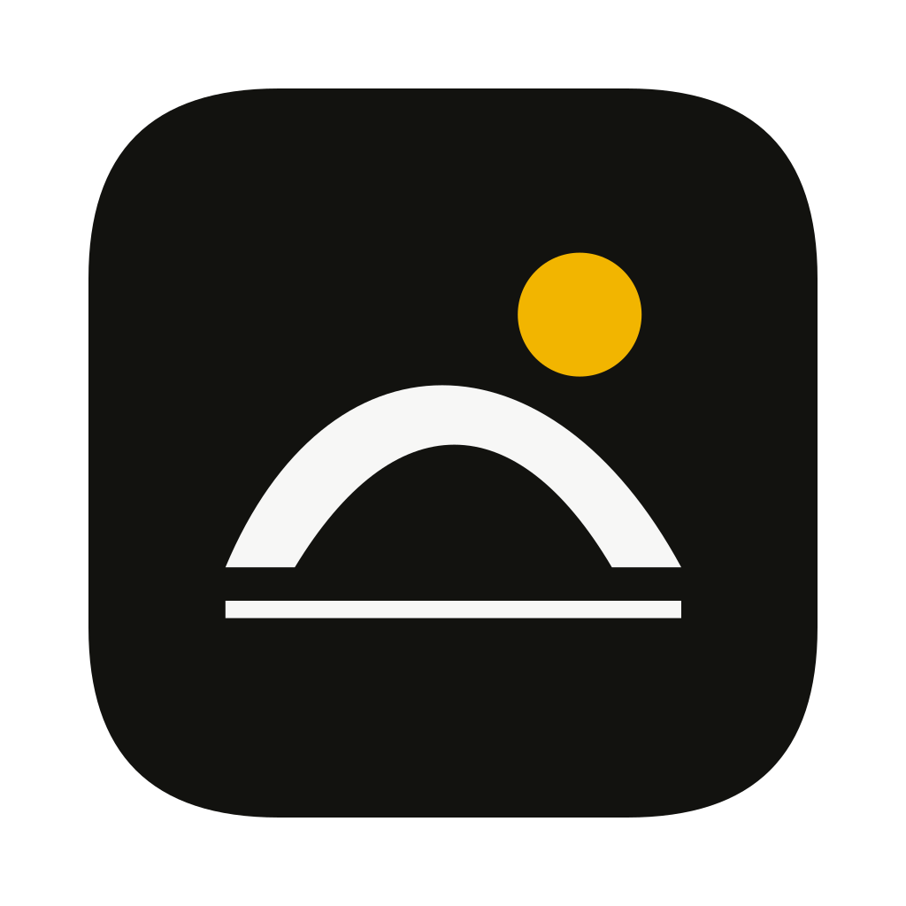

不借字母造型。让一个安静的弧面，托住右上方的太阳。

留白与圆角属于应用容器。图案自身不再加外框。
宽而低的拱面没有竖直字干，太阳仍是完整的圆。直线收住重心；右上方的圆点保留原方案的方向感。弧面、地平线、圆点各承担一个角色。
Beam #F2B500、Ink #12120F、Paper #F7F7F6；字标继续使用原有 Literata 轮廓。16 / 24 px 另做去掉底线的简化稿，仍需不同像素密度评审。